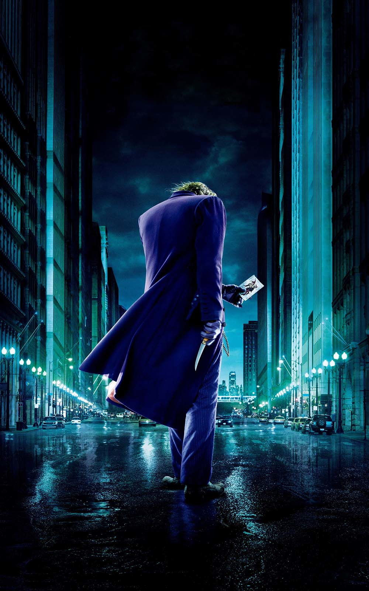

| BATMAN | Batman em seu segundo ano de combate ao crime, acaba se envolvendo em uma investigação de gato e rato, onde há um assassino sádico que deixe pistas em forma de charadas, o que leva o vigilante a explorar a fundo a corrupção no submundo de Gotham, e o passado sombrio de sua família. | 0110 ↓ < 2 0 2 2 > ↑ 1100 | Golden Trailer Awards |
| BATMAN X SUPERMAN: A ORIGEM DA JUSTIÇA | O confronto entre Superman e Zod em Metrópolis fez a população mundial se dividir sobre a presença de extraterrestres na Terra. Enquanto muitos consideram Superman um novo Deus, há aqueles que entendem ser extremamente perigosa a existência de um ser tão poderoso sem qualquer tipo de controle. Bruce Wayne é um dos que acreditam nesta segunda hipótese. Sob o manto de um Batman violento e obcecado, ele enfrenta Superman, enquanto o mundo se pergunta que tipo de herói precisa. | 💪2 0 1 6 👽 |
💩Pior 💩Filme de 2016 Ator Coadjuvante Roteiro |
| BATMAN: O CAVALEIRO DAS TREVAS RESSURGE | Após ser culpado pela morte de Harvey Dent e passar de herói a vilão, Batman desaparece. As coisas mudam com a chegada de uma ladra misteriosa, a Mulher-Gato, e Bane, um terrorista mascarado, que fazem Batman abandonar seu exílio forçado. | ♰2 0 1 2💀 |
Premio AFI:Melhor Filme do Ano BMI Film Music Award Golden Trailer Award for Best of Show |
||
|  | BATMAN O CAVALEIRO DAS TREVAS | Com a ajuda de Jim Gordon e Harvey Dent, Batman tem mantido a ordem na cidade de Gotham, mas um jovem e anárquico criminoso conhecido como coringa ganhar força e decide instaurar um verdadeiro caos na cidade. O justiceiro será testado psicologicamente e fisicamente como nunca fora antes em ujm confronto bastante pessoal. Cabe a Batman encontrar uma maneira de deter o vilão antes que mais vidas sejam perdidas. | ◊2 0 0 8♥ |
Oscarde Melhor Ator Coadjuvante Empire Award: Melhor Filme MelhorFotografia Melhor Edição |
|
| BATMAN BEGINS | O jovem Bruce Wayne viaja para o extremo Oriente, onde recebe treinamento em artes marciais do mestre Henri Ducard, um membro da misteriosa Liga das Sombras. Quando Ducard revela que a verdadeira proposta da Liga é a destruição completa da cidade de Gotham, Wayne retorna à sua cidade com o intuito de livrá-la de criminosos e assassino. Com a ajuda do mordomo Alfred e do expert Lucius Fox, nasce o Batman. | 2 0 0 5 |
MTV Movie Award: Melhor Filme MTV Movie Award: Melhor Herói PEOPLE'S Choice Award: Filme Favorito |
| BATMAN & ROBIN | A dupla dinâmica(Batman & Robin) enfrenta os supervilões Mr.Freeze e a sedutora ecoterrorista Hera Venenosa. Entretanto, para poder livrar Gotham City das garras dos vilões, Batman e Robin contam com uma nova companheira, a Batgirl. | 1 9 9 7 |
Prêmio Framboesa: Pior Filme Pior Atriz Coadjuvante(Alicia Silverstone) ... |
||
| BATMAN ETERNAMENTE |
Percorrendo as ruas de Gotham, Batman está pronto para defender a lei, mas desta vez o perigo vem em dobro. O vilão Duas Caras conta com a sorte para se livrar de Batman, e Charada é um Gênio criminoso cheio de truques e ideias diabólicas. Juntos, querem descobrir a identidade secreta do homem morcego e destruí-lo. Batman conta com a ajuda da irresistível Dra. Chase Meridian, psicóloga especialista em duplas personalidades, e do jovem acrobata que se transforma em seu novo parceiro, Robin. |
1 9 9 5 |
Saturn Awards:: Melhor Filme de Fantasia ------------------------ Seis indicações ao MTV Movie Awards 1996 |
||
| BATMAN: O RETORNO | O monstruoso Pinguim, que vive nos arredores de Gotham, se junta ao diabólico empresário Max Shreck para vencer Batman de uma vez por todas. Porém, a secretária de Shreck, Selina Kyle, Descobre os planos e se transforma na Mulher Gato, que se alia na destruição de Batman. | 1 9 9 2 |
Revista Empire: 7º Melhor Filme de Super Heróis 2º Melhor longa do personagem |
||
 |
BATMAN |
Após testemunhar a morte brutal de seus pais quando criança, o bilionário filantropo Bruce Wayne lida contra o crime na cidade de Gotham disfarçado do herói Batman, que coloca medo nos corações dos vilões. Mas quando um louco e deformado que se autointitula coringa começa a controlar o submundo do crime em Gotham, Batman precisa encarar seu mais perverso inimigo para proteger sua identidade e a mulher que ama, a repórter Vicki Vale. |
1 9 8 9 |
Oscar de Melhor Direção de Arte PEOPLE'S Choice Award: Filme Favorito PEOPLE'S Choice Award: Melhor Filme de Drama |
| BATMAN: O FILME | Quando Batman e Robin obtêm uma pista de que o Comodoro Schmidlapp está em perigo a bordo do seu iate, eles põem em curso uma missão de salvamento com o auxílio do Batcóptero. Mas a pista revela-se uma armadilha feita pelos quatro principais inimigos do Homem-Morcego. Armados com o Desidratador, que transforma seres humanos em pó, o terrível quarteto(CORINGA, DUAS-CARAS, CHARADA E MULHER GATO) planeja, assim, conquistar o mundo e acabar com a Dupla Dinâmica de uma vez por todas. | 1 9 6 6 |
Destaques: Cesar Romero, um dos Coringas mais ICÔNICOS do Cinema Atuação histórica de Adam West e Burt Ward(Batman & Robin) |